生成时间：2026-05-06T11:53:29+08:00
今日保留论文数：3
高能天体物理重点
1. Effects of magnetically driven shocks on nucleosynthesis and kilonovae from neutron star mergers
- 来源：arXiv / astro-ph.HE
- 链接：https://arxiv.org/abs/2605.03947v1
- 作者：Yuan Feng, Oleg Korobkin, Elias R. Most, Ananda F. Smith, Christopher J. Fontes
- 评分：novelty 7/10，importance 7/10，relevance 9/10，final 8.70/10
- 推荐理由：Strongly relevant neutron-star merger/kilonova paper combining SRMHD shocks, nucleosynthesis post-processing, and radiative transfer; potentially useful for interpreting kilonova diversity and remnant-driven outflows.
中文题目：磁驱动激波如何改变中子星并合抛射物的核合成与千新星辐射
做了什么：这篇论文研究中子星并合后长寿命并合残骸产生的磁驱动爆发——例如磁耀发式喷发或残骸坍缩触发的激波——如何穿过已经膨胀的并合抛射物，并进一步改变其动力学、电子丰度、熵、r 过程核合成产物和千新星光变。作者用二维狭义相对论磁流体模拟给出激波传播和加热历史，再用 WinNet 核反应网络和 SuperNu 辐射转移把热力学轨迹连接到元素丰度和多波段光变。主要结论是：足够强的磁驱动激波可把部分抛射物重新加热到核统计平衡，提高受激波物质的电子丰度并注入熵，从而系统性改变 r 过程产额；这些变化会在千新星颜色演化和晚期光变中留下可观测痕迹。
为什么重要：千新星常被用来反推并合抛射物质量、速度、镧系元素丰度和中子星物态方程，但这些反推通常假设抛射物在早期流体动力学阶段后近似自由膨胀、成分冻结。本文指出，如果并合后中心残骸具有较强磁活动，后续激波可重新加工抛射物的热力学和核合成历史。这意味着千新星多样性不一定只来自初始动力学抛射、盘风或视角差异，也可能携带中心残骸晚期能量注入的信息。
理论 / 观测 / 仪器方法价值：对理论而言，文章把磁驱动外流、激波加热、r 过程网络和多群辐射转移串成一条可计算链路，提供了评估后并合中心引擎反馈的新框架。对观测而言，它给出应关注的诊断量：颜色演化、红/蓝成分比例、晚期光变斜率以及与镧系元素丰度相关的不透明度变化。对方法而言，二维 SRMHD + 示踪粒子后处理 + 真实不透明度辐射转移的组合，比单纯参数化热源或灰不透明度模型更接近可用于解释未来事件的正向建模。
为什么应该关注：如果你用千新星约束 r 过程产额、并合残骸寿命、磁星型中心引擎或中子星物态方程，这篇文章值得关注。它提醒我们：千新星不是一个只由“抛了多少物质、速度多快、镧系元素多少”决定的静态问题；并合后几十毫秒到更晚的磁活动可能把已经抛出的物质重新加热、改变化学组成，并在光变中伪装成质量、速度或不透明度差异。
展开详细解读：文章讲解、背景、理论、重点章节、图表与相关工作
文章详细讲解
科学问题：中子星并合后的抛射物是宇宙 r 过程元素的重要来源，也是千新星的辐射源。传统千新星模型常把动力学抛射和盘风看成在早期确定成分与速度，随后进入近似同 homologous expansion 的辐射扩散阶段。但如果并合产物不是立即坍缩成黑洞，而是形成寿命较长的超大质量或大质量中子星，它的强磁场、差分转动和可能的坍缩事件可以在抛射物已经扩张后再注入能量。本文要回答的问题是：这种磁驱动激波是否强到足以重置局部核合成条件？如果能，它会怎样改变千新星的颜色和晚期光度？
作者怎么做：论文采用参数化的中心磁驱动爆发，把不同强度、不同发射时刻的磁化 blast wave 注入到正在膨胀的并合抛射物中，并用二维狭义相对论磁流体模拟追踪激波传播、压缩、加热和加速。模拟输出的拉格朗日示踪粒子给出密度、温度、速度和电子丰度等随时间的历史。随后作者用 WinNet 核反应网络重新计算每条轨迹上的核合成，用 SuperNu 辐射转移代码和较真实的不透明度计算千新星光变与颜色演化。这种流程的关键是把“激波是否只是动力学扰动”推进到“激波能否改变元素丰度并留下辐射信号”。
关键结果：强激波可以把部分抛射物加热回核统计平衡条件，使原先已经或即将进行 r 过程的物质经历新的热力学路径。受激波区域的电子丰度增加，熵也被提高，这会改变中子/种子核比例和最终 r 过程丰度分布。弱激波或很晚才发射的激波更可能主要表现为动力学和热注入，而不一定彻底重置核合成。辐射转移结果显示，这些成分和热结构变化会反映在千新星颜色演化、蓝/红成分相对强度以及晚期光变行为上，因此磁驱动残骸活动可能是千新星事件间差异的一个物理来源。
局限和下一步：本文是参数化研究，不是从完整广义相对论中子星并合、磁场放大、残骸演化到喷发的一体化模拟。二维 SRMHD 能抓住轴对称激波传播和磁化能量注入的主要效应，但三维湍流、非轴对称结构、喷流-抛射物混合、真实中微子输运和广义相对论引力都会带来额外复杂性。下一步需要把更自洽的中心引擎模型、三维几何、视角依赖辐射转移和观测样本拟合结合起来，判断这些信号是否可与抛射质量、速度、镧系元素不透明度和尘埃/宿主消光等因素区分。
背景知识
研究对象是双中子星或中子星-黑洞并合后的抛射物和千新星。并合会产生多种物质流：潮汐动力学抛射物通常较冷、富中子、低电子丰度，容易产生镧系元素和高不透明度红色千新星；冲击加热抛射物和后并合盘风可能具有较高电子丰度，产生相对蓝的辐射成分。GW170817/AT2017gfo 之后，千新星已经成为连接引力波、核物理、重元素起源和致密星物态方程的核心观测对象。
历史上，千新星建模的主线之一是从光变峰值时间、峰值光度和颜色反推抛射质量、速度和不透明度。早期解析模型把放射性 r 过程加热、扩散时间和同速膨胀联系起来；之后的多维辐射转移模型加入成分分层、非灰不透明度和视角效应。与此同时，数值相对论并合模拟显示，中心残骸的寿命、磁场和中微子照射会强烈影响盘风成分。本文进一步关注一个容易被简化处理的问题：抛射物离开中心后是否真的“化学冻结”，还是会被后续中心引擎重新加工。
现在值得重新看，是因为未来 LIGO-Virgo-KAGRA、KAGRA 后续升级、Einstein Telescope/Cosmic Explorer 以及 Rubin、Roman、JWST、30 米级望远镜将发现更多千新星。样本增多后，事件间颜色和晚期光变差异会成为物理诊断，而不只是个例拟合。若中心残骸磁活动可以改变核合成和辐射，那么把所有差异都归因于抛射质量或视角会产生系统偏差。
该领域常见误区包括：第一，把“中心引擎注入能量”只理解为额外热源，而忽略它可能改变电子丰度和核合成路径；第二，把蓝千新星简单等同于低镧系元素盘风，而不考虑激波重新加热和混合；第三，把晚期光变偏离简单幂律全部解释为热化效率或不透明度问题。本文的意义正在于把动力学激波、核网络和辐射转移放在同一个因果链中检查。
基础理论 / 方法脉络
核心物理图像是：并合抛射物以亚相对论到轻度相对论速度向外膨胀，中心残骸在稍后通过磁场释放能量，形成磁化激波或 blast wave。激波穿过抛射物时压缩并加热物质，把动能和磁能部分转化为内能。若峰值温度足够高，原有核组成会被光解或重置到核统计平衡；随后随着物质再次膨胀冷却，核反应网络决定新的 r 过程路径。
关键量包括抛射物质量 \(M_{\rm ej}\)、速度分布 \(v(r,\theta)\)、密度 \(\rho\)、温度 \(T\)、电子丰度 \(Y_e\)、熵 \(s\)、膨胀时间尺度 \(\tau_{\rm exp}\)、激波注入能量 \(E_{\rm sh}\) 和发射时间 \(t_{\rm launch}\)。其中 \(Y_e\) 直接控制单位重子中的质子比例，也控制中子/种子核比例，是决定能否合成重 r 过程和镧系元素的关键参数。熵和膨胀时间会影响种子核形成效率，进而改变最终丰度。
观测上，千新星光变由 r 过程放射性衰变加热和光子扩散竞争决定。不透明度 \(\kappa\) 对成分极其敏感：镧系元素和锕系元素的复杂 f 壳层跃迁会显著提高光学/近红外不透明度，使光变更红、更晚、更宽。激波若提高 \(Y_e\)、减少镧系元素产生，可能让辐射更蓝；若主要增加内能或改变速度结构，则可能改变峰值时间和晚期下降斜率。
数据分析逻辑上，本文不是直接拟合某个具体事件，而是做正向模型族：从参数化激波到 MHD 轨迹，再到核合成丰度和辐射转移光变。读者应注意常见退化：较小不透明度、较高速度、较低质量都可能让光变更早更蓝；额外热注入、热化效率变化和成分变化都可能影响晚期光度。因此单波段光变很难区分机制，多波段颜色、光谱和晚期红外数据更关键。
公式与推导
千新星最基本的能量来源可写成放射性加热率：
其中 \(M_{\rm ej}\) 是抛射物质量，\(\dot{q}_{\rm r}\) 是单位质量 r 过程衰变加热率，\(f_{\rm th}\) 是衰变产物热化效率。激波影响这个式子的方式不只是额外加热，还包括改变 \(\dot{q}_{\rm r}\) 背后的核素分布。
激波是否能重置核合成，首先取决于激波后温度。强激波近似下，部分动能转为热能，可用量级关系表示为：
其中 \(e_{\rm int}\) 是单位质量内能，\(v_{\rm sh}\) 是相对上游物质的激波速度，\(\mu\) 是平均分子量，\(m_{\rm p}\) 是质子质量。真实模拟中需用相对论 MHD 跳跃条件，但这个关系说明更强激波会带来更高温度。若 \(T_{\rm sh}\) 达到数 GK 以上，核统计平衡或准统计平衡变得重要。
电子丰度定义为：
其中 \(n_p\) 和 \(n_n\) 分别为质子和中子数密度。r 过程强弱可用中子/种子核比例粗略刻画：
\(Y_n\) 是自由中子丰度，\(Y_{\rm seed}\) 是种子核丰度。较低 \(Y_e\) 通常给出较大的 \(R_{n/s}\)，有利于合成第二、第三峰和镧系元素；激波若通过高温重置成分并提高 \(Y_e\)，会降低重 r 过程效率。
光变峰值的扩散时间尺度可由解析模型估算：
其中 \(\kappa\) 是平均不透明度，\(v_{\rm ej}\) 是特征速度，\(c\) 是光速。激波可改变 \(v_{\rm ej}\)，也可通过改变镧系元素丰度改变 \(\kappa\)，因此同一光变峰值变化并不对应唯一物理解释。
峰值光度的 Arnett 型量级估计为：
其中 \(\dot{Q}_{\rm sh}\) 表示激波沉积能量在扩散时间附近释放的有效贡献。本文强调的是，\(\dot{Q}_{\rm sh}\) 不能简单当作外加灯泡；它还会通过 \(Y_e,s,T\) 历史改变 \(\dot{Q}_{\rm r}\) 和 \(\kappa\)。
辐射转移中观测到的波段光度可写成角度和频率相关的形式：
其中 \(D\) 是源距离，\(I_\nu\) 是沿视线方向的比强度，\(d\Omega\) 是源在观测者天球上的立体角元。二维非球对称激波会导致 \(I_\nu\) 随视角变化，因此多角度辐射转移比一维灰模型更适合捕捉颜色和晚期差异。
模型拟合 / 应用方法
这篇文章本身更接近参数化正向建模，而不是对单个观测事件做贝叶斯反演。核心参数包括激波发射时间、注入能量或强度、磁化程度、初始抛射物质量与速度结构、角向分布以及初始成分。MHD 模拟给出每个模型的示踪粒子热力学轨迹，核网络输出同位素丰度和加热率，辐射转移输出多波段光变与颜色。
若把这类模型用于观测拟合，常见似然可写成多波段光度或星等残差的高斯形式，并加入距离、消光、爆发时刻和校准误差等 nuisance parameters。应同时拟合 \(g/r/i/z/J/H/K\) 等波段，而不是只拟合 bolometric 光变，因为激波改变成分后最敏感的诊断往往是颜色和谱能量分布。残差若表现为早期蓝端系统性偏差，可能指向低不透明度或额外高 \(Y_e\) 成分；若晚期近红外残差较大，可能与重元素不透明度、热化效率或激波后速度结构有关。
主要退化关系包括：\(M_{\rm ej}\)-\(\kappa\)-\(v\) 的扩散时间退化，激波能量与放射性加热率归一化的光度退化，\(Y_e\) 与中微子照射历史的成分退化，以及视角与本征角向结构的颜色退化。系统误差还来自核质量模型、裂变产额、原子不透明度数据库、LTE/非 LTE 假设、二维到三维映射、示踪粒子采样和初始并合抛射物模型。
实际应用场景包括：解释 GW170817 类事件中蓝红成分比例；评估未来引力波事件中残骸是否长寿命；判断晚期光变是否需要中心引擎；以及在银河化学演化中估计并合对重 r 过程元素的净产额。模型拟合时最应避免的是把激波只作为一个额外 luminosity term，而不允许它改变丰度和不透明度。
重点章节 / 结果段落怎么读
数据/初始条件部分：建议先看作者如何构造扩张中的并合抛射物背景，包括质量、速度、密度角向分布和初始 \(Y_e\)。这些假设决定激波穿过的柱密度和核合成基线，读者应把它们与常见数值相对论并合抛射结果对照。
MHD 方法部分：重点读磁化 blast wave 的注入方式、发射时间和强度参数。这里要弄清楚“早发射”和“晚发射”的物理含义：早期抛射物更致密，激波更容易热化并影响核反应；晚期抛射物更稀薄，能量更多转为动力学扰动或逃逸。
示踪粒子与核网络部分：重点看作者如何从欧拉网格提取拉格朗日热史，以及 WinNet 使用的初始条件、反应库和 NSE 切换标准。判断结果可靠性时，应关注高温阶段是否分辨充分、示踪粒子是否覆盖激波加热区域。
辐射转移部分：重点看 SuperNu 的输入丰度、不透明度处理、维度映射和观测角设置。千新星颜色和晚期光变对不透明度极敏感，因此该部分的原子数据和分组处理是连接理论与观测的关键。
结果与讨论部分：建议按“动力学改变—热力学轨迹—核合成产额—光变颜色”顺序阅读，而不是只看最终光变。这样可以判断某个观测特征究竟来自速度改变、成分改变，还是单纯热注入。稳健性检验若有，应特别关注不同激波强度、发射时间和初始抛射物模型下结论是否保持。
建议重点查看的图表
-
初始抛射物结构图：检查密度、速度和 \(Y_e\) 的半径/角向分布。关键是激波传播前的物质是否已有明显蓝/红分层，这会影响所有后续解释。
-
MHD 激波演化快照：检查温度、洛伦兹因子或速度、磁压/气压分布随时间的变化。重点看激波是否覆盖大质量区域，还是只沿极向打出低质量通道。
-
示踪粒子热力学轨迹图：检查 \(T(t)\)、\(\rho(t)\)、熵和 \(Y_e(t)\)。最关键的是哪些粒子达到 NSE 温度，以及高温持续时间是否足够改变核组成。
-
最终丰度分布图：检查不同激波强度和发射时间下的丰度 \(Y(A)\)，尤其第二峰、第三峰、镧系元素区和锕系元素区的变化。
-
加热率与热化效率图：检查单位质量放射性加热率是否随激波模型系统变化。若丰度改变导致加热率变化，它会直接影响晚期光变。
-
多波段光变和颜色曲线：检查模型间在光学和近红外的分离程度、峰值时间、晚期斜率以及颜色如 \(g-r\)、\(r-K\) 的演化。
-
角向/视角依赖图：若论文给出不同观测角光变，应检查极向与赤道向差异是否大于激波强度差异，因为这关系到可观测判别能力。
-
产额或质量分数汇总表：检查受激波影响的质量比例、平均 \(Y_e\)、镧系元素质量分数和总 r 过程产额，这些比单张光变图更能揭示物理原因。
关键图表逐图导读
图 1：通常应是模型设置或初始抛射物结构。横轴可能为空间坐标、半径或角度，纵轴/颜色表示密度、速度、温度或 \(Y_e\)。读图时要看抛射物是否接近同速膨胀、是否有极向高 \(Y_e\) 区和赤道低 \(Y_e\) 区。陷阱是把二维切片中的高温小区域误认为质量占比很大，需要结合质量加权分布判断。
图 2：应关注激波传播的 MHD 快照。坐标轴多为空间位置，颜色可能是温度、密度、磁压或速度，曲线可能标出激波前沿。主要结论通常是强激波能穿透并压缩大范围抛射物，早发射模型在高密度环境中沉积更多热量。读图陷阱是颜色标尺常为对数，视觉上明亮区域不一定代表主要质量。
图 3：示踪粒子的热力学历史图。横轴为时间，纵轴为温度、密度、熵或 \(Y_e\)，不同颜色代表激波强度、发射时间或粒子类别。关键看峰值温度是否超过 NSE 阈值、冷却时间尺度是否足够短以及 \(Y_e\) 是否出现系统上升。陷阱是少数高温粒子可能主导极端值，但未必显著影响总丰度。
图 4：核合成丰度 \(Y(A)\) 或质量分数对质量数 \(A\) 的图。横轴为核质量数，纵轴为丰度，模型线对应不同激波方案，可能与太阳 r 过程残差比较。重点看第二峰 \(A\sim130\)、第三峰 \(A\sim195\)、镧系元素区和轻 r 过程区的相对变化。陷阱是丰度曲线归一化方式会影响视觉比较，应确认是总质量归一还是某一峰归一。
图 5：放射性加热率或成分质量分数随时间/模型参数变化。横轴通常为并合后时间，纵轴为 \(\dot q\)、镧系元素质量分数或平均 \(Y_e\)。如果激波改变核素分布，晚期加热率和热化表现可能与无激波模型不同。读图时要区分核物理加热率变化和辐射扩散造成的光度变化。
图 6：多波段千新星光变。横轴为时间，纵轴为绝对星等或光度，不同颜色对应滤光片，不同线型对应模型。重点看峰值时间、峰值亮度、早期蓝光持续时间和晚期红外下降斜率。陷阱是星等轴反向，曲线向上不一定代表更亮；同时需要考虑距离和消光在实际观测中的影响。
图 7：颜色演化或谱能量分布。横轴为时间或波长，纵轴为颜色指数、\(\nu L_\nu\) 或通量。该图最能体现激波导致的成分/不透明度差异。读图时应看模型间差异是否超过典型测光误差和宿主消光不确定性，否则观测上难以判别。
图 8：参数扫描汇总图或表格。横轴可能是激波能量、发射时间，纵轴为受 NSE 重置质量、平均 \(Y_e\)、镧系元素质量分数或光变诊断量。重点寻找阈值行为：是否只有超过某一激波强度才显著改变核合成。陷阱是参数化激波能量与真实残骸磁能释放之间仍需物理映射。
论文原图 / 可嵌入图片
Fig06
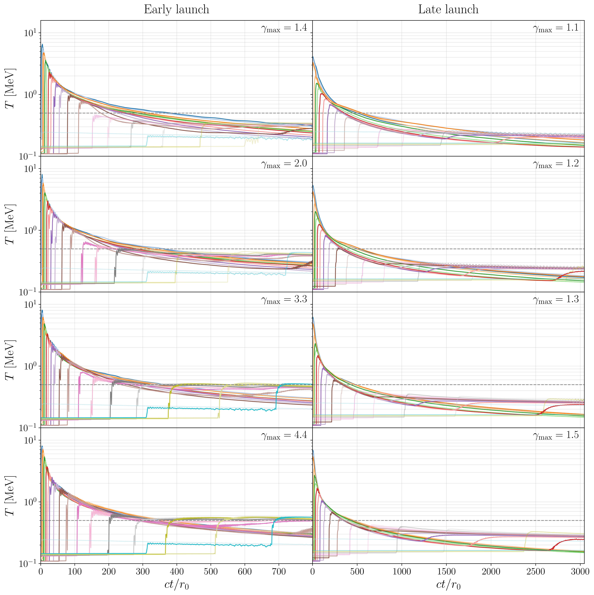
图注：Temperature, $T$, evolution for the entire ejecta profile. Panels are arranged as a $4\times2$ grid: the \emph{left} column shows the \textit{early-launch} series, while the \emph{right} column shows the \textit{late-launch} series. Rows correspond to increasing shock strength, labeled by the maximum Lorentz factor $\gamma_{\max}$ in each panel (early launch: $\gamma_{\max}=1.4,\,2.0,\,3.3,\,4.4$ from top to bottom; late launch: $\gamma_{\max}=1.1,\,1.2,\,1.3,\,1.5$). Within each panel, the colored curves trace individual ejecta trajectories launched from initial radii that are uniformly spaced in $\log r$; as the shock propagates outward, it heats the innermost tracers first and reaches progressively larger radii at later times, as reflected by the staggered temperature rises in the figure. The horizontal dashed line marks $T=0.5~\mathrm{MeV}$; material with $T$ above this value is assumed to be able to reach nuclear statistical equilibrium (NSE); tracers that never exceed this threshold are plotted semi-transparently (faint curves), while tracers that reach $T\ge 0.5~\mathrm{MeV}$ at least once are shown with full opacity. Times $t$ are stated relative to the inner cloud boundary crossing time, $r_0/c$.
对应解读：建议重点查看的图表第3项；关键图表逐图导读图3；关于强激波是否使示踪粒子达到 NSE 温度阈值的模型解释段落。
入选理由：这张图直接给出整个抛射物剖面中温度随时间的演化，并明确标出 T=0.5 MeV 的 NSE 阈值，区分早发射和晚发射、不同激波强度下哪些轨迹被加热到足以重置核合成条件。它比单个代表性轨迹更能支撑‘强激波可使部分物质回到 NSE’这一核心结论。
来源与置信度：arxiv_source；high；arxiv_source / main.tex:figure[6]
Fig09
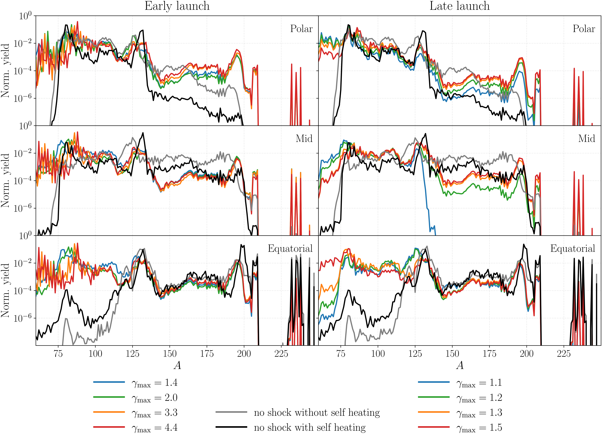
图注：Nucleosynthesis yield patterns for three angular tracer groups (rows: polar, mid-latitude, and equatorial). The left column shows the final normalized yields as a function of atomic mass number $A$ for the early-launch scenario, while the right column shows the corresponding late-launch scenario. Colored curves correspond to shock runs labeled by the maximum Lorentz factor $\gamma_{\max}$ (legend), where $\gamma_{\max}$ is measured at the end snapshot of the underlying MHD simulation for each model. Gray and black curves denote the no-shock reference runs with two different heating prescriptions, without and with self-heating, respectively.
对应解读：建议重点查看的图表第4项；关键图表逐图导读图4；详细解读中关于 r 过程丰度、第二峰和第三峰变化的段落。
入选理由：这张图按极向、中纬度、赤道三类示踪粒子展示早发射和晚发射情形下的最终核合成产额 Y(A)，并与无激波参考模型比较，是判断激波是否系统改变 r 过程丰度分布的核心证据。
来源与置信度：arxiv_source；high；arxiv_source / main.tex:figure[9]
Fig10
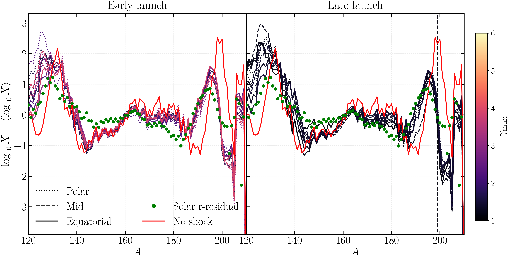
图注：Normalized heavy-element abundance patterns. Shown is the mass-fraction distribution as a function of mass number $A$, normalized according to $\log_{10} X - \langle \log_{10} X \rangle$ over $120 \leq A \leq 210$. Different line styles denote polar, mid-latitude, and equatorial angular bins, while colors indicate the shock strength parameterized by the maximum Lorentz factor $\gamma_{\max}$. Green points show the solar $r$-process residual normalized in the same way, and the red curve shows the no-shock reference model. The left and right panels show the early-launch and late-launch scenarios, respectively. Across both models, the resulting abundance distributions exhibit only modest angular and shock-strength dependence in the heavy-element regime, indicating that the overall shape of the lanthanide and third-peak pattern remains comparatively robust.
对应解读：建议重点查看的图表第4项；关键图表逐图导读图4；关于镧系元素区、第三峰以及与太阳 r 过程残差比较的解读。
入选理由：这张图聚焦重元素丰度形状，并与太阳 r 过程残差同尺度比较，能检验激波强度和角向分组是否显著改变镧系元素与第三峰区域。它补充 Fig09，尤其适合说明重元素总体形状相对稳健这一细节。
来源与置信度：arxiv_source；high；arxiv_source / main.tex:figure[10]
Fig05
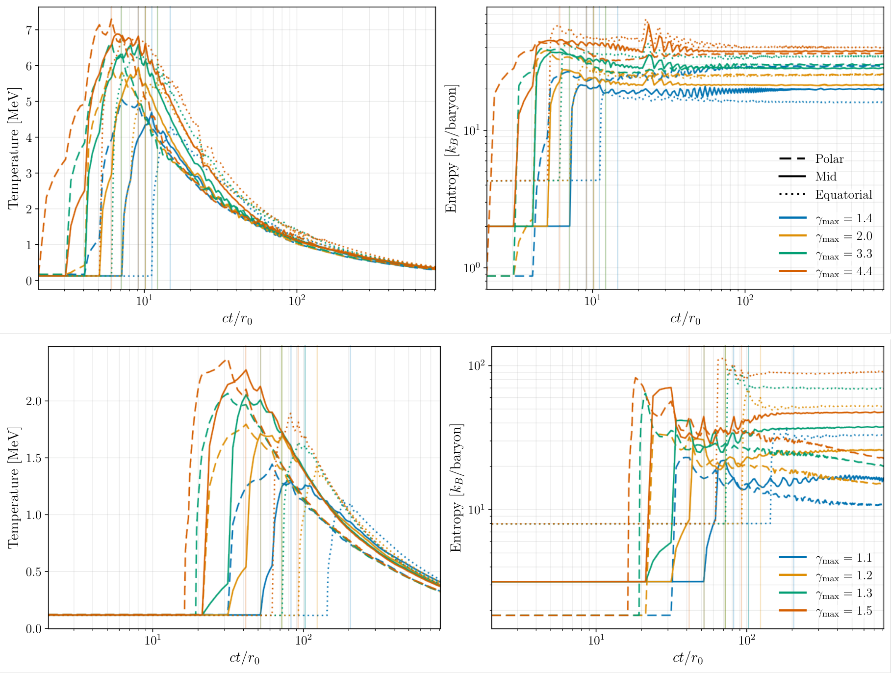
图注：Thermodynamic evolution along representative tracer trajectories for the four shock models as functions of time, $t$. Shown are ({\it left}) the temperature $T$ and ({\it right}) the entropy per baryon $s$. Different line styles encode angular groups (dashed: polar; solid: mid-latitude; dotted: equatorial), and different colors denote the shock strength labeled by the maximum Lorentz factor $\gamma_{\max}$. Vertical lines mark the time of shock passage for each tracer, coincident with a rapid rise in $T$ and a step-like increase in $s$, followed by gradual cooling and near-adiabatic expansion at later times.
对应解读：建议重点查看的图表第3项；关键图表逐图导读图3；关于示踪粒子 T(t)、熵 s(t) 和激波通过时热力学突变的段落。
入选理由：这张图展示代表性极向、中纬度和赤道示踪粒子的温度与熵随时间变化，并标出激波通过时刻，直接说明激波加热和熵注入如何发生。它适合解释核网络输入轨迹的物理来源。
来源与置信度：arxiv_source；high；arxiv_source / main.tex:figure[5]
Fig08
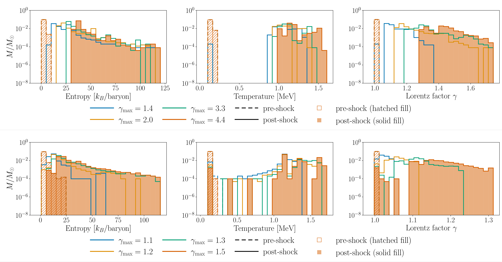
图注：Ensemble outflow properties. Shown are ({\it from left to right}) entropy per baryon $s$, temperature $T$, and Lorentz factor $\gamma$. Colors indicate the four shock models labeled by the maximum Lorentz factor $\gamma_{\max}$. For each model, hatched histograms show the pre-shock state, while solid filled histograms show the post-shock state. The shock passage shifts the ejecta to higher entropies and temperatures and accelerates a fraction of the outflow to larger $\gamma$, with stronger shocks producing more pronounced high-$s$, high-$T$, and high-$\gamma$ tails.
对应解读：建议重点查看的图表第8项；关键图表逐图导读图8；关于受激波影响质量比例、熵、温度和洛伦兹因子分布的汇总解读。
入选理由：这张图用分布直方图比较激波前后整个示踪粒子集合的熵、温度和洛伦兹因子，能避免只看二维亮区或少数轨迹造成的误判。它对判断激波影响的是大质量区域还是高温高速尾部特别重要。
来源与置信度：arxiv_source；high；arxiv_source / main.tex:figure[8]
Fig02
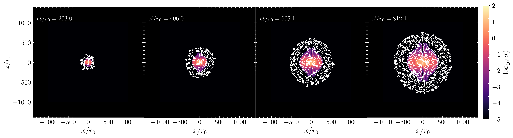
图注：Initial launch of a blast wave in the early-launch scenario with maximum Lorentz factor $\gamma_{\max}=2.0$. Shown in color is the magnetization parameter $\sigma$, at different times $t$ after launch, relative to the inner cloud radius crossing time $r_0/c$. White streamlines denote the in-plane magnetic field.
对应解读：建议重点查看的图表第2项；关键图表逐图导读图2；关于 MHD 激波传播、磁化结构和早发射情形的模型设置段落。
入选理由：这张图给出早发射、较强激波模型中磁化参数 σ 的时序快照和磁场流线，是候选图中最直接呈现 MHD blast wave 初始传播结构的图。它能为后续热力学轨迹和核合成变化提供动力学背景。
来源与置信度：arxiv_source；high；arxiv_source / main.tex:figure[2]
强相关工作
这项工作与 GW170817/AT2017gfo 的千新星建模密切相关。已有大量研究用多成分抛射物、非灰不透明度和视角效应解释其蓝到红的快速演化；本文在这个框架上加入后并合磁活动对核合成本身的反馈。建议检索关键词包括 “GW170817 kilonova radiative transfer”, “AT2017gfo lanthanide opacity”, “multi-component kilonova ejecta”, “neutron star merger r-process yields”。
在理论上，它也连接到磁星中心引擎、短伽马暴前后活动、并合残骸坍缩和磁驱动风的文献。相似问题包括：长寿命中子星自旋下降是否能增亮千新星？喷流或 cocoon 是否会冲击加热抛射物？中微子照射和 MHD 湍流如何提高 \(Y_e\)？本文的区别是强调强激波可让部分物质回到 NSE 并重新计算 r 过程产额，而不只是改变光变能量预算。
可能存在的张力是：一些解析或半解析千新星模型可用较简单的质量-速度-不透明度组合解释观测，不一定需要磁驱动激波；另一方面，完整数值相对论 MHD 模拟对并合后磁能释放的强度、时标和角向结构仍有不确定性。因此应把本文看作“这种机制在物理上可留下可观测信号”的参数空间探索，而不是已经证明所有千新星多样性都由磁激波造成。检索关键词可包括 “magnetar-powered kilonova”, “merger remnant collapse shock kilonova”, “MHD neutron star merger ejecta”, “shock reheating r-process nucleosynthesis”。
相似工作：
- https://arxiv.org/abs/1710.05836
- https://arxiv.org/abs/1710.05432
- https://arxiv.org/abs/1710.05431
- https://arxiv.org/abs/2102.07718
基础理论 / 方法工作：
- https://arxiv.org/abs/1001.5029
- https://arxiv.org/abs/1302.0743
- https://arxiv.org/abs/1510.05422
- https://arxiv.org/abs/1611.01159
相反观点 / 张力线索：
- https://arxiv.org/abs/1710.05838
- https://arxiv.org/abs/1810.00008
- https://arxiv.org/abs/1906.04205
2. What is the Strouhal number of turbulence driven by supernovae?
- 来源：arXiv / astro-ph.HE
- 链接：https://arxiv.org/abs/2605.03768v1
- 作者：James R. Beattie, Isabelle Connor, Enrico Ramirez-Ruiz
- 评分：novelty 7/10，importance 6/10，relevance 7/10，final 7.65/10
- 推荐理由：Direct measurement of the Strouhal number in supernova-driven multiphase ISM simulations is relevant for SNR feedback, ISM turbulence modeling, and indirectly cosmic-ray transport environments; concise result with reusable modeling implications.
中文题目：超新星驱动湍流的 Strouhal 数是多少？
做了什么：这篇短文直接从分层、多相星际介质数值模拟中测量超新星驱动湍流的 Strouhal 数 \({\rm St}=t_{\rm cor}/t_{\rm out}\)，也就是湍流外力的时间相干性相对于外尺度涡旋周转时间的比值。许多理想化湍流盒模型默认 \({\rm St}=1\)，但作者发现，在银河系型盘和星暴盘模拟中，按外尺度定义的中位数只有约 \({\rm St}\simeq0.25\)。这说明超新星驱动在整个外尺度上并不是一个持续相干一整个大涡时间的外力；\({\rm St}=1\) 更像是超新星遗迹冷却半径附近的局域近似。文章的重要性在于，它把湍流盒模型中的一个常被当作技术参数的量，连接到超新星遗迹膨胀、冷却半径和多相 ISM 的实际驱动尺度。
为什么重要：Strouhal 数会影响湍流密度 PDF、压缩模比例、时间相关外力的统计性质，进而影响星际介质中云形成、恒星形成阈值和反馈调节的模型。过去很多模拟把 \({\rm St}=1\) 当作自然选择，但这篇文章指出，对超新星驱动的 ISM 来说，外尺度上的实际值更接近 0.25。这会改变我们如何把小盒湍流实验、亚网格模型和真实星系盘中的反馈湍流对应起来。
理论 / 观测 / 仪器方法价值：对理论而言，文章给出了一个把超新星遗迹物理尺度 \(R_{\rm cool}\) 与湍流强迫时间相干性连接起来的标定。对观测解释而言，它提醒我们不能把外尺度速度弥散直接理解为由相干外力连续推动的单尺度湍流。对数值方法而言，它提供了从两时刻速度相关张量估计 \(t_{\rm cor}\) 与尺度依赖 \({\rm St}(\ell)\) 的可复用流程，可用于校准湍流盒、星系模拟亚网格反馈和受迫湍流初始条件。
为什么应该关注：如果你用湍流盒模拟解释分子云密度分布、用超新星反馈维持星系盘速度弥散，或在星系形成模拟中调参以得到合理的多相 ISM，那么 \({\rm St}\) 不是一个无关紧要的数值细节。它控制外力在时间上“记得多久”，而这种记忆会进入密度涨落、压缩结构寿命和能量级联。本文给出的 \({\rm St}\approx0.25\) 意味着标准 \({\rm St}=1\) 模型可能在外尺度上过度相干，尤其对压缩驱动问题影响较大。
展开详细解读：文章讲解、背景、理论、重点章节、图表与相关工作
文章详细讲解
科学问题：文章关注的是超新星驱动星际介质湍流时，驱动力在时间上到底有多相干。湍流盒模型通常通过人为外力维持稳态湍流，其中外力的相关时间常被设成外尺度涡旋周转时间，即 \({\rm St}=1\)。但真实 ISM 中的能量注入来自离散超新星遗迹、壳层膨胀、冷却和破碎，未必能在整个外尺度上保持一个大涡时间的相干性。因此核心问题是：在真实一些的多相、分层、超新星驱动模拟中，按可测速度相关函数定义的 \({\rm St}\) 是多少？
作者怎么做：作者使用银河系型盘和星暴盘的分层多相 ISM 模拟，从速度场构造两时刻相关张量，测量湍流速度在时间间隔 \(\tau\) 上的自相关衰减，由此估计强迫相关时间或湍流相干时间 \(t_{\rm cor}\)。同时，他们用外尺度 \(\ell_{\rm out}\) 和外尺度速度 \(u_{\rm out}\) 估计涡旋周转时间 \(t_{\rm out}=\ell_{\rm out}/u_{\rm out}\)。两者之比即为外尺度 Strouhal 数。文章还重构了尺度依赖的 \({\rm St}(\ell)\)，以判断在哪个尺度上 \({\rm St}\) 会接近 1。
关键结果：银河系型模型得到各向同性中位数 \({\rm St}=0.26^{+0.30}_{-0.16}\)，星暴模型得到 \({\rm St}=0.25^{+0.11}_{-0.12}\)。两个环境的中位数非常接近，说明外尺度上的超新星驱动时间相干性短于通常假设的一整个外尺度涡旋时间。尺度依赖曲线显示，\({\rm St}=1\) 出现在 \(\ell_\ast/\ell_{\rm out}\approx0.12\text{--}0.13\)，对应 \(\ell_\ast\approx25\text{--}32\,\rm pc\)。这与超新星遗迹在冷却半径附近注入动量和产生不稳定接触间断面的图像相符：局部注入尺度附近可以近似 \({\rm St}\sim1\)，但外尺度并非如此。
局限和下一步：这是一篇 Letter，重点是给出直接测量与物理解释，而不是穷尽所有 ISM 条件。结果依赖所用模拟的反馈实现、分辨率、冷却/加热函数、引力和磁场处理方式，以及相关张量如何定义和加权。下一步应在更大参数空间中检验，例如不同超新星聚团程度、垂直引力势、磁化程度、宇宙线反馈、剪切和自引力条件下 \({\rm St}\) 是否仍保持约 0.25；还应把该标定输入理想化受迫湍流盒，重新评估密度 PDF、恒星形成效率和云生命周期的差异。
背景知识
研究对象是由超新星反馈驱动的星际介质湍流。星系盘中的冷、中性、暖电离和热气体共存，超新星通过热能、动量和壳层膨胀向 ISM 注入能量。传统上，人们常用速度弥散、能量注入率和外尺度来描述这种湍流，但外力的时间结构同样重要：连续、长相关时间的驱动与离散、短相关时间的爆发式驱动，会产生不同的压缩结构和密度统计。
历史上，理想化湍流盒模拟为了可控，通常在傅里叶空间低波数处施加随机外力。外力可以是纯旋转、纯压缩或混合，也可以具有有限相关时间。很多工作默认外力相关时间等于大涡周转时间，等价于 \({\rm St}=1\)。这个选择方便、稳定，也让模型接近“外尺度涡旋被持续推动”的直觉；但它并不一定是超新星驱动 ISM 的真实极限。
现在值得重新看这个问题，是因为近期工作指出密度分布，特别是压缩驱动湍流中的质量密度 PDF，对 \({\rm St}\) 很敏感。如果 \({\rm St}\) 改变了高密度尾部或对数密度方差，那么基于湍流调制的恒星形成理论、云形成模型和反馈平衡模型都会受影响。与此同时，分层多相 ISM 模拟已经能够直接输出足够长时间序列和足够空间动态范围，使得从模拟中测量两时刻相关函数成为可能。
该领域常见误区之一是把“超新星注入尺度”“湍流外尺度”和“最大相关尺度”混为一谈。超新星遗迹在冷却半径附近把热能转化为动量并产生强不稳定性，但星系盘中最终形成的速度相关外尺度可能更大，受壳层重叠、盘厚度、浮力、剪切和多相结构共同影响。另一个误区是把 \({\rm St}=1\) 看作湍流理论的普适要求；实际上它是关于外力时间相关性的模型选择，不是由 Kolmogorov 级联自动给出的定律。
基础理论 / 方法脉络
核心物理图像是：超新星爆炸先驱动近似球对称的强激波，随后经历自由膨胀、Sedov-Taylor 绝热阶段、辐射冷却阶段和动量守恒雪犁阶段。在冷却半径 \(R_{\rm cool}\) 附近，壳层开始显著辐射损失，接触间断面和壳层不稳定性把能量与动量耦合到周围湍流中。若在这一局域尺度上比较强迫变化时间和涡旋时间，两者可接近，因此 \({\rm St}(R_{\rm cool})\sim1\)。但当把尺度放大到 ISM 湍流外尺度时，多个超新星事件的空间和时间叠加会降低整体相干性。
Strouhal 数在这里定义为 \({\rm St}=t_{\rm cor}/t_{\rm out}\)。\(t_{\rm cor}\) 可从速度场或强迫场的两时刻相关函数衰减得到，\(t_{\rm out}\) 通常由外尺度长度除以该尺度速度得到。若 \({\rm St}\ll1\)，外力相对于大涡周转很快去相关，更接近短记忆随机激励；若 \({\rm St}\gtrsim1\)，外力在大涡演化期间保持方向和结构，更容易持续压缩或拉伸同一结构。
观测和模拟上，外尺度可由速度功率谱峰值、速度相关函数积分尺度或结构函数转折确定。不同定义会带来系统差异：功率谱对周期盒和边界处理敏感，结构函数受大尺度梯度和盘分层影响，积分尺度受有限盒尺寸影响。本文的价值在于使用两时刻相关张量而不仅是单时刻功率谱，因此直接捕捉时间相干性。
需要注意的退化包括：较短 \(t_{\rm cor}\) 可能来自真实外力去相关，也可能来自相位混合、剪切、垂直外流或多相气体交换；较大的 \(t_{\rm out}\) 可能来自外尺度定义偏大，而不是驱动力本身更短暂。密度加权、体积加权、温度相选择、是否扣除平均垂直流和旋转剪切，都会影响测得的相关时间。
公式与推导
文章的核心量是 Strouhal 数：
这里 \(t_{\rm cor}\) 是湍流驱动或速度场的时间相关尺度，\(t_{\rm out}\) 是外尺度涡旋周转时间。\({\rm St}=1\) 表示外力记忆时间与最大能量含量涡旋的演化时间相当；\({\rm St}<1\) 表示外力更快去相关。
外尺度涡旋时间通常写作：
其中 \(\ell_{\rm out}\) 是速度场能量含量最大的尺度或相关积分尺度，\(u_{\rm out}\) 是该尺度上的特征湍流速度。若外尺度取自功率谱峰或相关函数积分，\(u_{\rm out}\) 则应与同一尺度滤波后的速度涨落对应。
两时刻相关张量可概念性写为：
其中 \(u_i\) 是扣除平均流后的第 \(i\) 个速度分量，\(\tau\) 是时间滞后，尖括号表示对空间、时间窗口或样本的平均。若取迹并做各向同性平均，可得到标量相关函数 \(C(\tau)\)。
相关时间可由相关函数积分或指数拟合定义，例如：
或在近似指数衰减时使用
前者更一般，但对长时间噪声和有限时间序列敏感；后者参数少，但可能忽略振荡、剪切或爆发式反馈导致的非指数形状。
若假设惯性区速度随尺度满足幂律 \(u_\ell\propto \ell^\alpha\)，尺度依赖周转时间为：
对 Kolmogorov 型不可压缩湍流 \(\alpha=1/3\)，有 \(t_\ell\propto\ell^{2/3}\)；对强激波或 Burgers 型湍流 \(\alpha\approx1/2\)，有 \(t_\ell\propto\ell^{1/2}\)。因此同一物理强迫相关时间在不同尺度上对应不同 \({\rm St}(\ell)=t_{\rm cor}(\ell)/t_\ell\)。
本文报告 \({\rm St}=1\) 出现在
且 \(\ell_\ast\approx25\text{--}32\,\rm pc\)。这说明标准 \({\rm St}=1\) 并不对应 \(\ell_{\rm out}\)，而更接近超新星遗迹冷却半径附近的局域注入尺度。推导链条是：从模拟速度场得到 \(C_{ij}(\tau)\)，由其衰减得 \(t_{\rm cor}\)，再由 \(\ell_{\rm out}\) 和 \(u_{\rm out}\) 得 \(t_{\rm out}\)，最终得到外尺度 \({\rm St}\) 和尺度依赖 \({\rm St}(\ell)\)。
模型拟合 / 应用方法
这类工作最关键的拟合对象是两时刻相关函数或相关张量。实际做法通常是先定义湍流速度涨落，例如扣除水平平均流、垂直风、整体旋转或剪切，再计算不同时间滞后下的归一化相关函数。随后可用指数衰减、积分时间、半高宽时间或更复杂的核函数估计 \(t_{\rm cor}\)。如果相关函数有振荡或负瓣，积分定义和指数拟合会给出不同结果，因此论文中对误差条和稳健性检验的处理很重要。
参数估计上，\({\rm St}\) 的不确定性来自 \(t_{\rm cor}\)、\(\ell_{\rm out}\) 和 \(u_{\rm out}\) 三部分。若采用贝叶斯或 bootstrap，可对不同时间片、空间区域、速度分量和气体相进行重采样，得到中位数和分位区间。似然可以近似建立在相关函数数据点的协方差上，但这些点高度相关，不能简单当作独立高斯点。更稳妥的做法是对时间块或独立快照段做重采样。
主要系统误差包括有限模拟盒尺寸、垂直边界外流、盘分层导致的各向异性、超新星注入算法、冷却半径是否被解析、磁场和宇宙线是否改变壳层破碎时间，以及外尺度定义。若超新星聚团程度较高，多个遗迹合并成 superbubble，时间相关性可能不同于孤立超新星。若分辨率不足以解析 \(R_{\rm cool}\)，局域 \({\rm St}\sim1\) 的物理解释也会更不确定。
退化关系上，较小的 \({\rm St}\) 可由较短相关时间导致，也可由较大的外尺度周转时间导致；二者在单个比值中不可区分。因此读者应检查作者是否分别报告 \(t_{\rm cor}\)、\(\ell_{\rm out}\)、\(u_{\rm out}\)。实际应用中，如果要把结果用于湍流盒模拟，应避免直接把 \({\rm St}=0.25\) 当作所有尺度通用参数，而应区分外尺度驱动盒与局域超新星注入盒：前者应使用较短相关时间，后者在 \(R_{\rm cool}\) 附近可使用 \({\rm St}\sim1\)。
重点章节 / 结果段落怎么读
-
引言和问题设定：重点看作者如何定义 Strouhal 数，以及为什么 \({\rm St}=1\) 的传统假设需要重新审视。这里应特别注意他们引用的近期密度 PDF 研究，因为那部分说明 \({\rm St}\) 不是无关紧要的数值参数。
-
模拟数据与样本：关注银河系型盘和星暴盘模型的基本物理条件，包括超新星率、盘面气体性质、分层结构、冷却和反馈实现。读者需要判断这两个模型是否覆盖自己关心的 ISM 环境，以及冷却半径和外尺度是否被充分解析。
-
两时刻相关张量方法：这是全文方法核心。应读清楚速度场如何预处理，相关张量如何归一化，各向同性中位数如何从不同方向或分量合成，\(t_{\rm cor}\) 是通过积分、拟合还是特征衰减时间得到。
-
外尺度和 \({\rm St}\) 测量结果：重点看银河系型与星暴模型的 \({\rm St}\) 分布，而不仅是中位数。误差条不对称说明不同时间或方向上散布较大，需检查这种散布是否反映真实间歇性还是测量噪声。
-
尺度依赖重构和物理解释：这一部分把 \({\rm St}=1\) 的尺度定位到 \(\ell_\ast/\ell_{\rm out}\approx0.12\text{--}0.13\)，并将 \(\ell_\ast\approx25\text{--}32\,\rm pc\) 与超新星遗迹冷却半径联系起来。读者应重点看这个尺度匹配是否依赖假设的速度尺度律。
-
讨论与局限：关注作者如何区分“外尺度模型”和“局域注入模型”，以及他们是否讨论磁场、宇宙线、超新星聚团、自引力和分辨率等可能改变结论的因素。
建议重点查看的图表
-
两时刻相关函数或相关张量随时间滞后的图：看 \(C(\tau)\) 是否近似指数衰减，是否有负瓣、振荡或长尾；这些会直接影响 \(t_{\rm cor}\)。
-
\({\rm St}\) 分布图或箱线图：比较银河系型盘和星暴盘的中位数、分位区间和离群点。关键是看两个环境是否真的都集中在约 0.25，还是由宽分布偶然给出相似中位数。
-
外尺度测量图：检查速度功率谱、相关函数或结构函数如何确定 \(\ell_{\rm out}\)。若谱峰很宽，\(t_{\rm out}\) 的系统误差可能很大。
-
尺度依赖 \({\rm St}(\ell)\) 曲线：重点看 \({\rm St}=1\) 与曲线交点是否稳健，以及银河系型和星暴模型的交点是否真的在 \(\ell_\ast/\ell_{\rm out}\approx0.12\text{--}0.13\)。
-
与超新星冷却半径比较的图或表：看 \(\ell_\ast\approx25\text{--}32\,\rm pc\) 是否与模拟中的 \(R_{\rm cool}\) 或壳层破碎尺度一致，而不是后验解释。
-
各向异性诊断：如果有分方向 \(x,y,z\) 或平行/垂直盘面的结果，应检查垂直外流和盘面湍流是否给出不同相关时间。
-
稳健性检验表：看改变气体相选择、密度加权方式、时间窗口、相关函数拟合范围后，\({\rm St}\) 是否仍维持在约 0.25。
关键图表逐图导读
图 1：通常应是模拟场景或速度/密度切片。横纵轴可能是盘面或垂直方向的空间坐标，颜色表示气体密度、温度或速度。读图时不要只看壳层形态是否“像 ISM”，而要看超新星遗迹、热泡和冷云的典型尺寸是否覆盖 \(25\text{--}32\,\rm pc\) 以及外尺度。陷阱是视觉上最大的泡并不一定等于湍流外尺度。
图 2：应重点寻找两时刻相关函数 \(C(\tau)\)。横轴是时间滞后 \(\tau\)，纵轴是归一化相关。数据点或阴影区表示不同快照、方向或模型的不确定性，模型线可能是指数衰减或积分估计。主要结论是相关函数在小于外尺度周转时间的时间内明显衰减。读图陷阱是把初始快速下降和长尾平均成一个单一时间尺度时，定义会影响 \({\rm St}\)。
图 3：可能是 \({\rm St}\) 的分布或银河系型与星暴模型对比。横轴可为模型类别、速度分量或时间窗口，纵轴为 \({\rm St}\)。中位数和 16/84 分位区间是重点。主要结论是两个模型的中位数都约为 0.25，而不是 1。陷阱是误差条较宽时，不能声称每个瞬时区域都严格为 0.25；正确解读应是外尺度统计意义上的典型值低于 1。
图 4：尺度依赖 \({\rm St}(\ell)\) 曲线最关键。横轴应是 \(\ell/\ell_{\rm out}\) 或物理尺度 \(\ell\)，纵轴是 \({\rm St}\)。水平线 \({\rm St}=1\) 与模型曲线交于 \(\ell_\ast/\ell_{\rm out}\approx0.12\text{--}0.13\)。若图中有银河系型和星暴两条曲线，需看它们在归一化尺度上是否重合。陷阱是 \({\rm St}=1\) 不是外尺度结果，而是较小局域尺度结果。
图 5：若有与超新星遗迹冷却半径或理论尺度比较的图，横轴可能是环境密度、超新星率或模型类别，纵轴为 \(R_{\rm cool}\)、\(\ell_\ast\) 或二者比值。重点是 \(\ell_\ast\) 是否落在冷却半径量级。陷阱是冷却半径本身依赖环境密度、金属丰度和爆炸能量，不能把 25--32 pc 当成普适常数。
图 6：若附录给出稳健性检验，常见形式是不同拟合窗口、权重、气体相选择下的 \({\rm St}\) 对比。横轴为方法选择，纵轴为测得的 \({\rm St}\)。应看系统偏移是否小于统计散布。陷阱是只引用主文中位数而忽略方法选择带来的偏差。
论文原图 / 可嵌入图片
Fig03
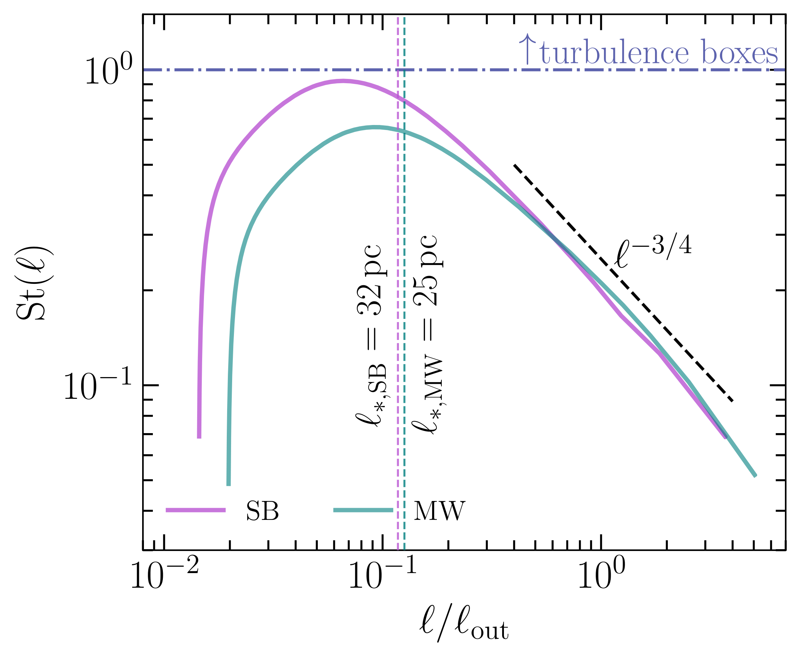
图注：The Strouhal number as a function of scale, $\St(\ell)$, for the MW (teal) and SB (purple) models, derived from the measured velocity power spectrum as detailed in \autoref{ssec:st_ell}. The horizontal axis is normalized by the turbulent outer scale, $\ell_{\rm out}$, rather than by the gaseous scale height. The sloped dashed guide line shows the scale-dependent cooling-radius/contact-layer model prediction, \autoref{eq:theory_for_St}, that $\St(\ell)\propto \ell^{-3/4}$ along the scale-free cascade. The horizontal dot-dashed line marks $\St=1$, the classical turbulence-box assumption that the forcing correlation time equals the outer-scale eddy turnover time. The vertical dashed lines mark the inferred empirical crossing scales, $\ell_\ast$, where the reconstructed curves reach $\St(\ell_\ast)=1$. With this normalization the crossings occur at nearly the same dimensionless scale in both galaxy models, $\ell_\ast/\ell_{\rm out}\approx0.12\text{--}0.13$, corresponding to $\ell_{\ast,\rm MW}\approx25\,\rm{pc}$ and $\ell_{\ast,\rm SB}\approx32\,\rm{pc}$.
对应解读：建议重点查看的图表第4项；关键图表逐图导读图4；详细解读中的尺度依赖 \({\rm St}(\ell)\) 与 \({\rm St}=1\) 交点结论。
入选理由：这张图直接展示 \({\rm St}(\ell)\) 随归一化尺度 \(\ell/\ell_{\rm out}\) 的变化，包含 MW 与 SB 两条模型曲线、\({\rm St}=1\) 水平线、理论斜率指引线以及交点 \(\ell_\ast/\ell_{\rm out}\approx0.12\text{--}0.13\)。它是支撑“\({\rm St}=1\) 只在局域冷却半径附近成立、不是外尺度假设”的核心证据。
来源与置信度：arxiv_source；high；arxiv_source / main.tex:figure[3]
Fig02
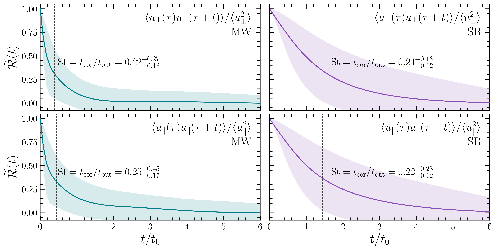
图注：The normalized temporal correlation function, $\widetilde{\mathcal{R}}(t)$ (\autoref{eq:time_correlation_function}), as a function of the time lag, $t$, in units of the eddy turnover time on the gaseous scale height, $t_0$. Columns show the MW and SB galaxy models, while rows show the projected velocity components perpendicular and parallel to $\bnab\phi$. The perpendicular velocity correlation is computed from the in-plane diagonal components, $(\widetilde{\mathcal{R}}_{xx}+\widetilde{\mathcal{R}}_{yy})/2$, and the parallel velocity correlation is $\widetilde{\mathcal{R}}_{zz}$. Solid curves show the spatial mean, shaded regions show the spatial $16^{\rm{th}}$--$84^{\rm{th}}$ percentile interval, and dot-dashed vertical lines mark the median integral time, $t_{\rm cor}$. Panel annotations give the corresponding median $\St=t_{\rm cor}/t_{\rm out}$ with $16^{\rm{th}}$--$84^{\rm{th}}$ percentile ranges.
对应解读：建议重点查看的图表第1、2、6项；关键图表逐图导读图2和图3；模型拟合段落中两时刻相关函数/相关张量拟合 \(t_{\rm cor}\) 的核心内容。
入选理由：这张图给出归一化时间相关函数 \(\widetilde{\mathcal{R}}(t)\) 随时间滞后变化，并按 MW/SB 与垂直/平行速度分量分面展示，含 16--84 分位阴影、积分相关时间竖线和对应 \({\rm St}\) 标注。它直接支撑 \(t_{\rm cor}\) 的测量、\({\rm St}\approx0.25\) 的中位数结论以及各向异性诊断，是理解拟合定义和误差区间最重要的图。
来源与置信度：arxiv_source；high；arxiv_source / main.tex:figure[2]
Fig04
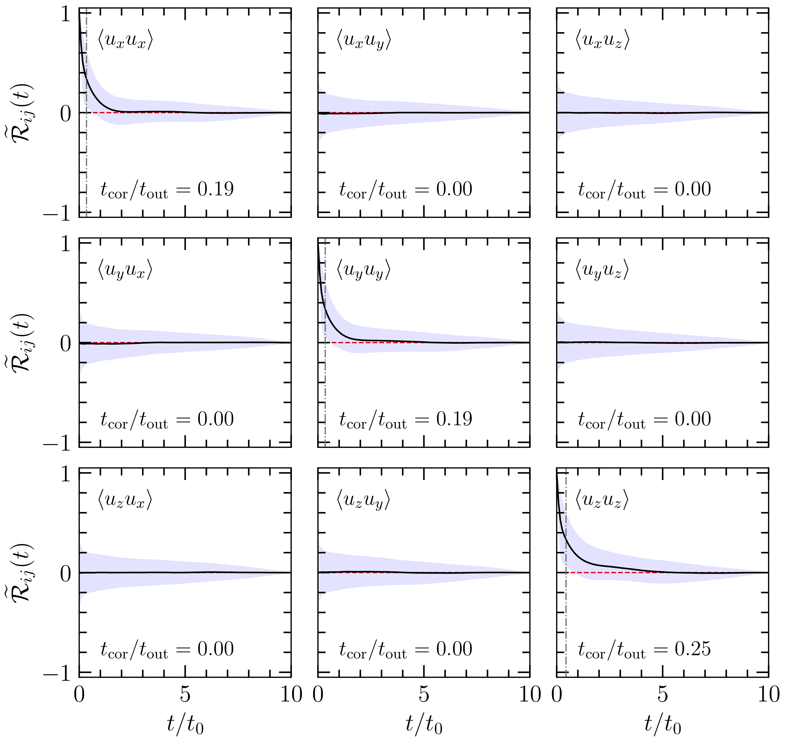
图注：The same as \autoref{fig:time_correlation_funcs_main}, but for the full temporal correlation tensor in the MW model. Rows and columns correspond to the velocity components \(i\) and \(j\) in \(\widetilde{\mathcal{R}}_{ij}\). The diagonal components carry the dominant correlations, with median \(\St^{xx}\approx\St^{yy}\approx0.19\) and \(\St^{zz}\approx0.25\), while the off-diagonal components have zero median integral time, indicating no robust temporal coherence.
对应解读：建议重点查看的图表第6项；模型拟合段落中关于相关张量、速度分量和各向异性的讨论。
入选理由：这张图展示 MW 模型完整时间相关张量 \(\widetilde{\mathcal{R}}_{ij}\)，可检查对角分量与非对角分量的相干性差异，并给出 \(xx,yy,zz\) 分量的典型 \({\rm St}\)。它比单一投影结果更能支持日报中关于盘面湍流、垂直方向和张量定义系统误差的讨论。
来源与置信度：arxiv_source；high；arxiv_source / main.tex:figure[4]
Fig05
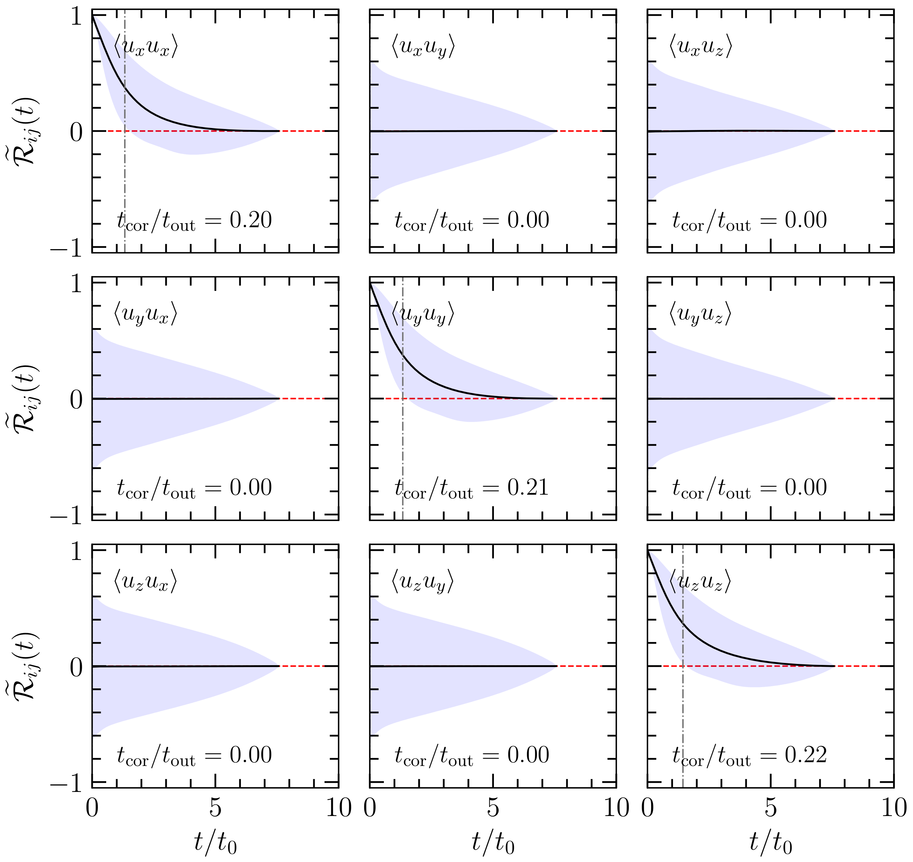
图注：The same as \autoref{fig:time_correlation_funcs_main}, but for the full temporal correlation tensor in the SB model. Rows and columns correspond to the velocity components \(i\) and \(j\) in \(\widetilde{\mathcal{R}}_{ij}\). The diagonal components again dominate, with median \(\St^{xx}\approx0.20\), \(\St^{yy}\approx0.21\), and \(\St^{zz}\approx0.22\), while the off-diagonal components have zero median integral time.
对应解读：建议重点查看的图表第6项；模型拟合段落中关于 SB 模型相关张量和各向异性的讨论。
入选理由：这张图是 SB 模型完整时间相关张量结果，与 Fig04 形成环境对比。它显示星暴盘中对角分量仍主导且 \({\rm St}^{xx},\ {\rm St}^{yy},\ {\rm St}^{zz}\) 均约为 0.20--0.22，非对角分量无稳健相干性，有助于判断 \({\rm St}\approx0.25\) 是否受特定方向或交叉项主导。
来源与置信度：arxiv_source；high；arxiv_source / main.tex:figure[5]
Fig01
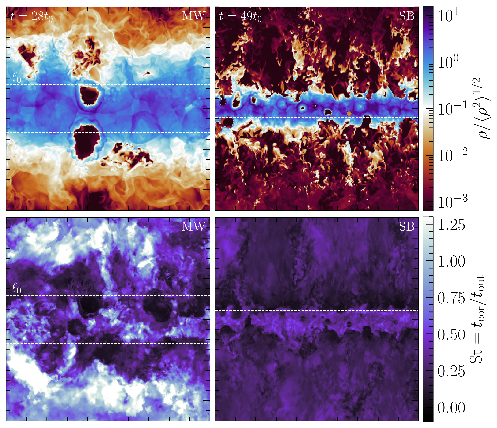
图注：Two-dimensional slices parallel to $\bnab\phi$ of statistically stationary field quantities. The panels are organized by galaxy model (MW, column 1; SB, column 2), with annotations shown in the top corners of each panel. The first row is the mass density, $\rho$, and the second row is the local Strouhal number, $\St=t_{\rm cor}/t_{\rm out}$, computed over $10t_0$ of statistically steady evolution. The MW model is characterized by a thick, transonic, warm disk, and an SN explosion rate of $\gamma_{\rm SNe}/10^{-4}\,\rm{yrs} = 0.1$, whereas the SB model is characterized by a thin disk, hot, diffuse wind, and a $\gamma_{\rm SNe}$ roughly 30 times larger than the MW model.
对应解读：关键图表逐图导读图1；建议重点查看的图表第2项以及对模拟场景、局域 \({\rm St}\) 空间分布的背景说明。
入选理由：这张图展示 MW 与 SB 的密度切片和局域 Strouhal 数切片，可帮助读者把多相盘、热风、超新星泡和局域 \({\rm St}\) 分布联系起来。虽然它不是定量拟合 \(t_{\rm cor}\) 或 \({\rm St}(\ell)\) 的主证据，但能为日报中关于模拟环境和局域尺度解释提供视觉背景。
来源与置信度：arxiv_source；high；arxiv_source / main.tex:figure[1]
强相关工作
这篇工作直接连接了两类文献：一类是星际介质中超新星驱动湍流和多相盘模拟，另一类是理想化受迫湍流盒中外力时间相关性对统计量的影响。前者常关心超新星能否维持观测到的 H I 速度弥散、热气体填充因子和盘-晕循环；后者常关心密度 PDF、Mach 数、压缩/旋转驱动比例和恒星形成率。本文的贡献是把湍流盒中的 \({\rm St}\) 参数从经验选择变成可由多相 ISM 模拟测量的量。
与相似观测或模拟相比，本文并不是重新测量速度弥散或外尺度，而是测量时间相干性。这一点使它和传统能量预算论文不同：即使两个模型有相同速度弥散和外尺度，只要驱动相关时间不同，密度结构和压缩事件的持续性也可能不同。建议检索关键词包括“supernova driven turbulence Strouhal number”、“two-time correlation tensor ISM turbulence”、“forcing correlation time compressive turbulence density PDF”、“supernova remnant cooling radius turbulence driving”。
可能存在张力的方向包括：某些星系盘模拟或解析模型把超新星聚团形成的 superbubble 视为更长时间相干的大尺度驱动；某些湍流盒研究则可能发现 \({\rm St}=1\) 更符合特定密度 PDF 或观测云统计。本文的结果提示应区分孤立遗迹冷却半径附近的局域驱动、聚团超新星造成的 superbubble 驱动，以及整个盘厚或外尺度上的有效驱动。检索时可同时查“superbubbles ISM turbulence driving scale”、“clustered supernova feedback turbulence correlation time”、“density PDF Strouhal number turbulence”。
相似工作：
- https://arxiv.org/abs/2605.03768
基础理论 / 方法工作：
- https://ui.adsabs.harvard.edu/abs/1959AN....284..109S/abstract
- https://ui.adsabs.harvard.edu/abs/1977ARA%26A..15..175M/abstract
- https://ui.adsabs.harvard.edu/abs/1985ApJ...291..722C/abstract
相反观点 / 张力线索：
（未提供）
3. Resonances as signatures of scalar clouds in eccentric extreme-mass-ratio inspirals
- 来源：arXiv / astro-ph.HE
- 链接：https://arxiv.org/abs/2605.03756v1
- 作者：Qi-Xuan Xu, Richard Brito, Riccardo Della Monica, Rodrigo Vicente, Chen Yuan
- 评分：novelty 7/10，importance 6/10，relevance 6/10，final 7.30/10
- 推荐理由：Relativistic calculation of eccentric EMRIs in scalar clouds predicts dense resonance signatures and waveform dephasing; relevant to compact-object/high-energy gravity topics, though less directly tied to gamma-ray or cosmic-ray work.
中文题目：偏心极端质量比旋近中，标量云的可观测共振信号
做了什么：这篇文章研究一个小致密天体沿偏心赤道轨道旋入被标量云包围的黑洞时，轨道运动如何激发标量场通量中的共振结构。作者把问题放在全相对论黑洞微扰框架中处理，而不是用弱场或圆轨道近似；核心发现是，偏心率会把原本较少的共振扩展成靠近最后稳定轨道的一串密集共振。这些共振来自强场区径向频率和方位频率的分裂，因此在圆轨道或牛顿近似中看不到。通过绝热演化轨道，作者进一步指出这些标量通量共振能在引力波相位中累积出可能被未来空间引力波探测器识别的退相干。
为什么重要：EMRI 是 LISA 等空间引力波任务的关键源类，也是检验强场引力和黑洞环境的高精度探针。若超辐射产生的轻标量云存在，它会改变小天体旋近时的能量、角动量损失，从而在波形相位中留下环境印记。本文的重要性在于指出：偏心率不是一个可忽略的细节，而可能是把标量云信号从微弱背景效应放大为可识别共振特征的关键。
理论 / 观测 / 仪器方法价值：理论上，本文把标量云中 EMRI 的相对论计算从圆轨道推广到偏心轨道，揭示了由强场双频结构导致的新共振序列。观测上，它给出了一类可在波形相位中寻找的非真空黑洞环境信号。方法上，它强调必须使用全相对论微扰和多频轨道分解，否则会漏掉最有诊断力的共振。
为什么应该关注：如果你关心 LISA 能否发现超轻玻色子、黑洞超辐射或非真空黑洞环境，这篇文章值得看。它告诉我们，真实 EMRI 的偏心率可能不是麻烦的 nuisance parameter，而是帮助识别标量云的放大器；同时也提醒波形模板若忽略这类强场共振，可能会在参数估计中把新物理误当成质量、自旋或偏心率偏差。
展开详细解读：文章讲解、背景、理论、重点章节、图表与相关工作
文章详细讲解
科学问题：轻标量场如果存在，可通过黑洞超辐射在旋转黑洞周围形成类氢原子束缚态，即所谓标量云。一个恒星级致密天体旋入这样的系统时，不仅向无穷远辐射引力波，也会与云交换能量和角动量。过去相对论研究主要集中在圆轨道，因而只看到较简单的共振条件；但天体物理形成的 EMRI 往往保留显著偏心率，偏心轨道具有径向和方位两个基本频率，强场区这两个频率不再满足牛顿极限下的简单关系。本文要问的是：偏心率是否会在标量通量和最终引力波相位中产生新的、可观测的标量云特征。
作者怎么做：文章采用全相对论黑洞微扰框架，考虑 Schwarzschild 黑洞背景上的偏心赤道轨道，并把小天体作为扰动源激发标量云或标量场模。偏心轨道的源项可分解为由方位频率和径向频率组合成的离散谱线，因此标量通量不只在单一轨道频率处响应，而是在多重谐波上与云的本征频率或准束缚模发生共振。作者计算这些标量通量随轨道参数，特别是半通径、偏心率和接近最后稳定轨道程度的变化，并把通量反馈进绝热旋近方程，估计波形相位退相干。
关键结果：主要发现是偏心率诱导出一串密集的潜在可探测共振，尤其集中在最后稳定轨道附近。这些共振并非简单的牛顿谐波效应，而是强场区径向频率与方位频率分裂后，由组合频率扫过标量云响应频率所导致。因此它们只有在全相对论计算中才自然出现。轨道绝热演化显示，当旋近穿过这些共振时，标量通量会改变能量和角动量损失率，进而在累积的引力波相位中产生可探测退相干。
局限和下一步：摘要显示本文使用 Schwarzschild 黑洞和赤道偏心轨道作为第一步，这与真实超辐射云通常围绕 Kerr 黑洞形成之间存在理想化差距。自旋、云的非线性演化、云耗散、潮汐扰动、标量场质量范围和探测器噪声下的完整贝叶斯可探测性仍需进一步研究。下一步自然是推广到 Kerr 背景、非赤道轨道和自洽演化波形，并把这些共振结构嵌入 LISA 数据分析模板，检验它们与质量、自旋、偏心率和环境拖曳效应的退化。
背景知识
研究对象是极端质量比旋近 EMRI：一个质量约为恒星级黑洞、中子星或白矮星的小天体，围绕质量为 $10^5$ 到 $10^7 M_\odot$ 的大质量黑洞缓慢旋近。由于质量比很小，小天体在数万到数十万轨道周期内逐渐损失能量，形成相位极其丰富的毫赫兹引力波信号。EMRI 的优势是能精细扫描黑洞近区时空；劣势是波形建模复杂，对轨道偏心率、倾角、自旋耦合和环境扰动都很敏感。
标量云来自黑洞超辐射思想：若存在康普顿波长与黑洞尺度相当的超轻玻色子，旋转黑洞可把自旋能量转移给场的束缚态，使某些模增长并形成宏观占据的云。这个图像常被用来约束轴子样粒子和其他轻玻色子。历史上，超辐射云的研究多关注连续引力波、黑洞自旋分布中的空洞，以及双星或 EMRI 中的环境效应。本文处在第三条线上：不是只问云是否存在，而是问小天体穿过云时能否通过相位和共振识别云。
为什么现在值得重新看：LISA 进入任务定义和波形准备阶段，EMRI 模板必须覆盖强场、多频、长时间相干的真实信号。过去很多标量云-EMRI 研究为了可控性采用圆轨道或弱场近似，但偏心率对 EMRI 来说并不罕见，尤其是动力学俘获形成的系统。偏心轨道的频谱更丰富，因此有可能把原本狭窄或偶然的共振变成一组更容易扫过的特征。
常见误区包括：第一，把标量云看成简单的额外摩擦或连续介质阻力；事实上它有离散模结构，响应可以是尖锐共振。第二，以为圆轨道结论能代表一般 EMRI；但偏心轨道有径向周期，源频率是多重组合频率。第三，把牛顿极限下的近闭合椭圆直觉带入强场区；在强场中近心点进动显著，径向频率和方位频率分离，这正是本文共振序列的物理来源。
基础理论 / 方法脉络
核心物理图像是“多频驱动的束缚场响应”。小天体沿测地线运动，其应力能或标量荷源随时间周期性变化。圆轨道只有一个主要方位频率，源谱相对稀疏；偏心轨道则同时有径向振荡和方位运动，源谱包含 $m\Omega_\phi+n\Omega_r$ 这类组合频率。当组合频率接近标量云的本征频率或准束缚态频率时，标量通量被放大，轨道能量和角动量损失率发生尖峰或符号变化。
关键量包括大黑洞质量 $M$、小天体质量 $\mu$、质量比 $\eta=\mu/M$、轨道半通径 $p$、偏心率 $e$、径向频率 $\Omega_r$、方位频率 $\Omega_\phi$、标量场质量 $\mu_s$ 以及标量模的频率 $\omega_{nlm}$。在 Schwarzschild 背景中，没有黑洞自旋导致的框架拖曳，但强场近心点进动仍会让 $\Omega_\phi$ 和 $\Omega_r$ 明显不同。靠近最后稳定轨道时，径向运动变慢或频率结构快速变化，组合频率更容易密集扫过标量模。
观测方法上，引力波探测器并不直接测标量通量，而是测轨道相位的长期累积。若标量通量改变了 $\dot E$ 和 $\dot L$，轨道频率演化就偏离真空 GR 模板，造成相位退相干。对 EMRI 来说，即使瞬时通量修正很小，也可能因长时间相干积累变得显著。本文的要点正是把局域的标量共振转化为波形相位中可检验的累积效应。
需要注意的退化包括：标量云参数与中心黑洞质量、自旋、轨道偏心率初值、质量比以及其他环境效应之间的混淆。系统误差可能来自采用绝热近似、忽略保守自力、忽略 Kerr 自旋和非赤道运动、标量云空间分布模型不完备，以及共振穿越时绝热条件可能局部失效。
公式与推导
偏心 Schwarzschild 测地线常用半通径 $p$ 和偏心率 $e$ 参数化，径向位置可写成
其中 $M$ 是中心黑洞质量，$\chi$ 是径向相位变量，$e$ 控制近拱点和远拱点差异。这个表达式说明偏心轨道的源项天然随径向周期振荡，而不只是随方位角旋转。
轨道源的频谱由两个基本频率组合而成：
其中 $m$ 是方位谐波数，$n$ 是径向谐波数，$\Omega_\phi$ 表示平均方位进动频率，$\Omega_r$ 表示径向振荡频率。圆轨道极限下径向振荡消失或 $n$ 谐波不再丰富；偏心情况下，多个 $n$ 值都能贡献，从而给出密集谱线。
标量场扰动可示意写为分离变量形式
其中 $l,m$ 是球谐指标，$X_{lmn}$ 是径向函数，$Y_{lm}$ 是球谐函数。小天体运动决定每个 $(l,m,n)$ 模的源强，背景势垒和标量质量决定径向函数如何向无穷远、黑洞视界或云模耦合。
共振条件可概括为
其中 $\omega_{\rm cloud}$ 是标量云束缚态或相关响应峰的频率。物理意义是外部周期驱动与云的本征振荡相匹配，导致能量和角动量交换增强。本文强调，这个条件在强场区因 $\Omega_\phi\neq\Omega_r$ 而产生许多只有相对论计算才能捕捉的解。
轨道绝热演化由通量平衡给出：
其中 $E,L$ 是小天体轨道能量和角动量，$\dot E_{\rm GW},\dot L_{\rm GW}$ 是引力波通量，$\dot E_\phi,\dot L_\phi$ 是标量场通量或与云交换的贡献。共振会使 $\dot E_\phi$ 和 $\dot L_\phi$ 在窄区间内显著变化。
最终可观测量是引力波相位偏移，示意为
其中真空模板与含云模板的频率演化差异被长期积分。即使每次共振造成的瞬时频率差不大，EMRI 的长寿命和高相干性也能把它放大成可检测的退相干。
模型拟合 / 应用方法
这类工作的拟合目标不是单个共振峰本身，而是整段 EMRI 波形的相位、振幅和频率演化。理论模板通常需要参数化中心黑洞质量和自旋、小天体质量、初始半通径、偏心率、轨道倾角、天空位置、距离，以及标量场质量、云占据数或云质量、耦合强度和模量子数。本文摘要中展示的是前向建模：计算偏心轨道上的标量通量，再通过绝热方程演化轨道，比较含标量云与无云情形的波形相位差。
在实际数据分析中，似然通常可写为探测器噪声加权内积下的波形残差：含云模板若能显著降低残差，或无云模板需要偏离合理参数才能吸收相位结构，才构成证据。关键诊断量包括匹配滤波重叠、累积相位差、共振穿越时间、每个共振对 $\dot E$ 和 $\dot L$ 的贡献，以及残差是否呈现局域化的相位跳变或频率演化 kink。贝叶斯后验中应检查标量质量与中心黑洞质量的强相关，因为超辐射云频率通常由 $M\mu_s$ 控制。
主要系统误差包括：绝热近似在尖锐共振附近是否足够；只用 Schwarzschild 背景是否会漏掉 Kerr 频率结构；标量云是否被视为固定背景而没有自洽耗散；偏心率演化、保守自力和二阶质量比效应是否影响相位；以及 LISA 低频噪声、银河前景和源重叠对共振识别的影响。实际应用中，应把这类共振模板与真空 EMRI、吸积盘拖曳、暗物质尖峰、潮汐扰动等环境模型一起比较，避免把一种环境效应误判为超轻玻色子证据。
重点章节 / 结果段落怎么读
-
引言和物理动机：建议先看作者如何界定标量云、超辐射和 EMRI 的关系。重点不是“是否有标量场”的泛泛讨论，而是为什么偏心 EMRI 会比圆轨道提供更丰富的共振诊断。
-
轨道与扰动形式化：重点读偏心赤道 Schwarzschild 轨道的参数化、基本频率定义，以及标量场方程如何被分解为 $(l,m,n)$ 模。这里决定了后文共振为什么是组合频率而非单频。
-
标量通量计算：应关注边界条件、通量归一化、标量云模或准束缚态响应如何进入计算，以及与圆轨道或弱场近似相比新增了哪些项。若论文给出数值收敛检验，需检查谐波截断是否足以覆盖高偏心率。
-
共振结构结果：这是文章核心。读者应看共振随半通径、偏心率和接近最后稳定轨道位置如何分布，哪些共振最强，是否存在符号变化或窄峰，以及这些峰是否确实与 $m\Omega_\phi+n\Omega_r$ 的强场分裂有关。
-
绝热演化和波形退相干：重点看作者如何把标量通量反馈到轨道演化，比较含云和无云波形相位。这里要判断所谓“可探测”是基于相位差阈值、信噪比估计，还是更完整的匹配滤波分析。
-
讨论、局限与展望：应特别关注作者如何处理 Schwarzschild 与真实 Kerr 超辐射云之间的差别，以及他们是否说明未来推广到旋转黑洞、非赤道轨道和完整 LISA 数据分析的路径。
建议重点查看的图表
-
轨道频率随半通径或接近 LSO 参数变化的图：看 $\Omega_\phi$ 与 $\Omega_r$ 在强场区如何分离，这是共振密集化的基础。
-
标量通量随轨道半径或频率演化的图：重点看尖峰位置、峰宽、峰高，以及偏心率从小到大时共振数量是否明显增加。
-
共振条件图或模式索引图：应检查哪些 $(m,n)$ 谐波与标量云频率相交，靠近最后稳定轨道时是否出现密集交叉。
-
不同偏心率的对比图：看同一标量云参数下，圆轨道、低偏心率和高偏心率通量差异，避免把数值噪声误读成新共振。
-
轨道绝热演化图：检查半通径、偏心率、能量或角动量随时间的变化是否在共振处出现可解释的 kink 或加速/减速。
-
波形相位差或退相干图：看纵轴是弧度、周期数还是匹配损失；关注相位差是否在共振穿越后阶跃式累积，以及与探测阈值相比是否足够大。
-
数值收敛或稳健性诊断：若有，应检查谐波截断、径向积分精度、边界条件和时间步长对共振峰的影响。
关键图表逐图导读
图 1：通常应是轨道频率或共振条件的基础图。横轴可能是半通径 $p$、轨道频率或到最后稳定轨道的距离，纵轴可能是 $\Omega_\phi$、$\Omega_r$ 或组合频率 $m\Omega_\phi+n\Omega_r$。读图时要看强场区两种基本频率是否明显分裂，以及组合频率曲线是否与标量云频率水平线相交。陷阱是不要把弱场区近似闭合轨道的频率关系外推到 LSO 附近。
图 2：很可能展示标量能量或角动量通量随轨道参数的变化。横轴若为 $p$ 或时间，纵轴应关注通量的相对修正而非绝对量。尖锐峰表示共振响应；若有多条不同偏心率曲线，应看偏心率增加是否带来更多、更密的峰。陷阱是共振峰可能很窄，采样不足会低估峰值或错过峰位。
图 3：若论文给出模式分解图，应按 $(l,m,n)$ 分量阅读。坐标轴可能是模式编号或组合频率，数据点/曲线代表各谐波对总通量的贡献。关键是识别哪些径向谐波 $n$ 主导偏心诱导共振。陷阱是高阶谐波单个幅度小，但数量多，累积贡献或在特定频率处的共振贡献可能并不小。
图 4：绝热演化图应把含标量云与真空 GR 的轨道参数演化放在一起。横轴多为时间、轨道周期数或观测时间，纵轴可为 $p(t)$、$e(t)$、$E(t)$、$L(t)$。应寻找共振穿越时的局部拐点和之后的累积偏移。陷阱是瞬时变化不显眼并不代表不可测，EMRI 相位会长期积分这些小差异。
图 5：波形相位差或退相干图最接近观测结论。横轴为时间或频率，纵轴为 $\Delta\Psi$、累计相位循环数或 mismatch。读者应看相位差是否超过约一弧度量级、是否集中在共振后增长，以及是否对偏心率敏感。陷阱是仅用相位差不能完全等价于探测显著性，还需要噪声加权重叠和参数重拟合后的残差。
图 6：若有稳健性或近似比较图，应看全相对论结果、圆轨道结果、弱场近似之间的差别。本文核心主张是共振只在全相对论偏心计算中出现，因此这类图的关键是证明新峰不是数值伪影，而是由 $\Omega_\phi-\Omega_r$ 分裂导致。
论文原图 / 可嵌入图片
Fig01
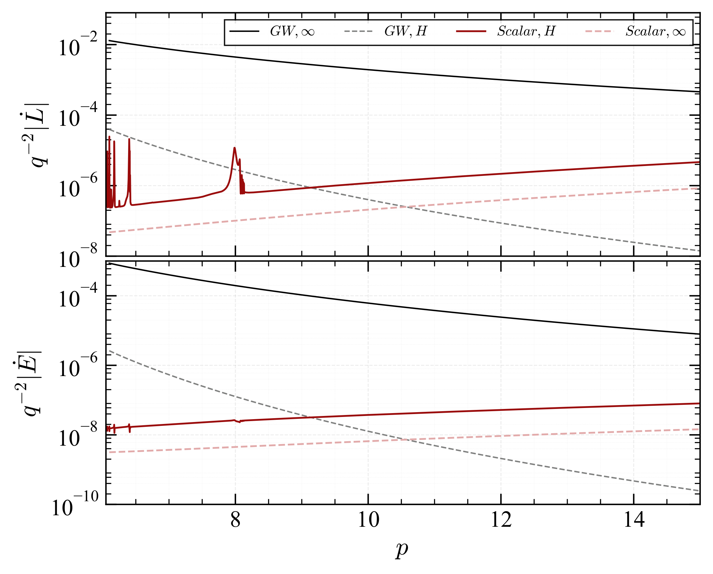
图注：Angular momentum and energy loss rates $\dot{L}$ (\textit{top panel}) and $\dot{E}$ (\textit{bottom panel}) via gravitational radiation (black lines) and scalar field scattering (red lines) shown as functions of semi-latus rectum $p$ for fixed eccentricity $e=0.02$. The background scalar field is in the prograde cloud state $\{n_i,\ell_i, m_i\} = \{0,1,1\}$ with $M\mu =0.2 $ and cloud mass $M_{b}/M = 0.05$. Resonances driven by eccentric motion in the strong field appear prominently in the torque from the scalar field. Over the range of $p$ shown here, $\dot L^{s,H}$ and $\dot E^{s,H}$ are negative, whereas all other loss rates are positive.
对应解读：对应“建议重点查看的图表”第2、4项，以及“关键图表逐图导读”中的图2：标量能量/角动量通量随半通径变化、共振尖峰与偏心诱导强场共振。
入选理由：这是最直接支撑论文核心主张的图：同时给出引力辐射与标量场散射导致的角动量损失率和能量损失率，横轴为半通径 p，固定偏心率 e=0.02，并明确显示强场偏心运动驱动的标量场共振峰。相比其他候选图，它最能证明新共振不是波形后处理产物，而是首先出现在标量通量/力矩中的物理效应。
来源与置信度：arxiv_source；high；arxiv_source / Letter.tex:figure[1]
Fig03
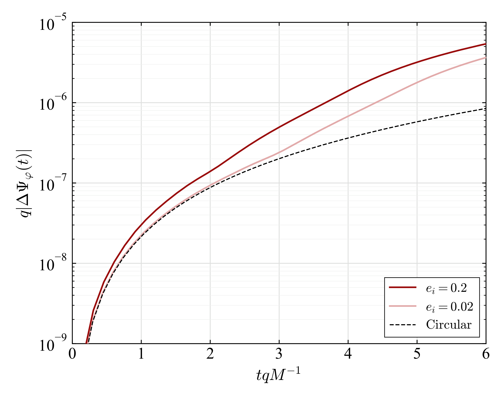
图注：Dephasing of EMRI systems as a function of time when passing through the $n=2$ scalar cloud resonances. For typical parameters ($q=10^{-5}, M = 10^6 M_{\odot}$), the EMRI traverses this resonance band in $\sim 1$ month. The orbital evolution starts at $p_i=8.2$ and we take a dipolar cloud with the same parameters as in Fig.~\ref{fig:Fluxes}. The solid lines show the cases with $e_i=0.2$ and $e_i=0.02$, whereas the dashed line shows the dephasing of an analogous system with $e=0$.
对应解读：对应“建议重点查看的图表”第6项，以及“关键图表逐图导读”中的图5和“模型拟合”段落：波形退相干、共振穿越后的累计相位差和可探测性诊断。
入选理由：该图直接展示 EMRI 穿越 n=2 标量云共振带时的退相干随时间演化，并比较 e_i=0.2、e_i=0.02 与圆轨道情形，是连接理论共振与观测可探测性的关键图。它比单纯轨道演化图更贴近摘要中‘可探测 dephasing’的结论。
来源与置信度：arxiv_source；high；arxiv_source / Letter.tex:figure[3]
Fig02
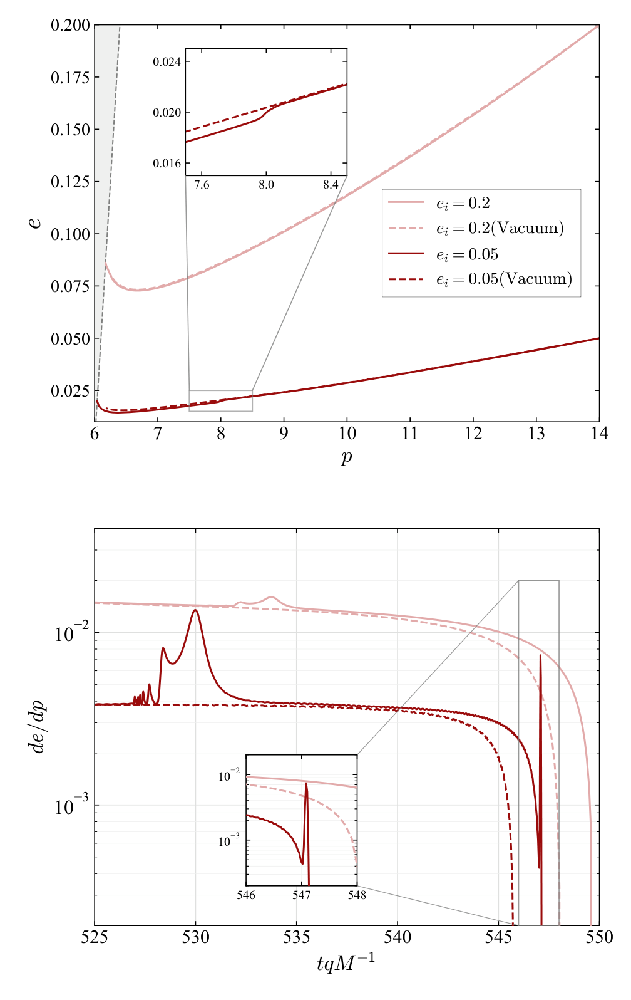
图注：Orbital evolution trajectories in the $(p, e)$ plane (\textit{left panel}) and rate $de/dp$ as a function of time (\textit{right panel}) for two systems starting at $p_i = 14$ with initial eccentricities $e_i = 0.2$ and $e_i = 0.05$ within a dipolar cloud with the same properties as in Fig.~\ref{fig:Fluxes}. The solid lines include both the GW and scalar field torque, while the dashed lines denote the vacuum inspirals (i.e. GW only).
对应解读：对应“建议重点查看的图表”第5项，以及“关键图表逐图导读”中的图4：含标量云与真空 GR 的绝热轨道演化对比。
入选理由：该图在 (p,e) 平面和 de/dp 随时间的变化中比较含标量场力矩与真空旋近，展示共振通量如何反馈到绝热轨道演化。它能补充 Fig01 的通量诊断和 Fig03 的相位退相干，说明从局部共振到轨道参数累积偏移的中间环节。
来源与置信度：arxiv_source；high；arxiv_source / Letter.tex:figure[2]
强相关工作
这篇工作与黑洞超辐射和超轻玻色子约束文献直接相连。基础方向包括 Detweiler 对 massive bosonic fields 的超辐射不稳定性分析，以及 Arvanitaki、Dubovsky 等把黑洞自旋测量用于约束轴子样粒子的工作。相关检索关键词可用 “black hole superradiance scalar cloud EMRI”, “ultralight boson LISA extreme mass ratio inspiral”, “massive scalar bound states Kerr black holes”。
它也与 EMRI 波形建模和环境效应研究相连。真空 EMRI 的主线是黑洞微扰、自力、绝热通量和多频 Kerr 测地线；环境效应则包括吸积盘、暗物质尖峰、第三体扰动、潮汐共振和非 GR 场的辐射通道。本文的独特位置是：把偏心轨道的多频谱与标量云的离散响应结合起来，强调强场频率分裂造成圆轨道分析无法看到的共振。
可能的张力或相反观点来自两方面。一方面，完整 Kerr 背景中频率结构更复杂，Schwarzschild 近似能否代表真实超辐射云系统需要检验；另一方面，数据分析中许多环境效应都能引起相位偏移，单靠退相干幅度不足以证明标量云，必须依赖共振位置、模式结构和参数一致性。建议检索 “EMRI environmental effects LISA”, “floating orbits scalar field EMRI”, “resonances Kerr EMRI self force”。
相似工作：
- https://arxiv.org/abs/2605.03756
- https://ui.adsabs.harvard.edu/search/q=black%20hole%20superradiance%20scalar%20cloud%20EMRI
- https://ui.adsabs.harvard.edu/search/q=floating%20orbits%20scalar%20field%20EMRI
基础理论 / 方法工作：
- https://doi.org/10.1103/PhysRevD.22.2323
- https://arxiv.org/abs/0905.4720
- https://arxiv.org/abs/1004.3558
- https://ui.adsabs.harvard.edu/search/q=extreme%20mass%20ratio%20inspiral%20black%20hole%20perturbation%20review
相反观点 / 张力线索：
- https://ui.adsabs.harvard.edu/search/q=EMRI%20environmental%20effects%20LISA%20dark%20matter%20accretion%20disk
- https://ui.adsabs.harvard.edu/search/q=Kerr%20EMRI%20resonances%20self%20force
- https://ui.adsabs.harvard.edu/search/q=ultralight%20boson%20black%20hole%20spin%20constraints%20uncertainties
说明
评分由 LLM 给出初评，再由本地阈值策略过滤；IACT / 大气切伦科夫望远镜相关论文按 HE 同等优先级处理，其他非 HE 论文需要明显关联高能天文、宇宙线、伽马射线或仪器/方法价值才会保留。